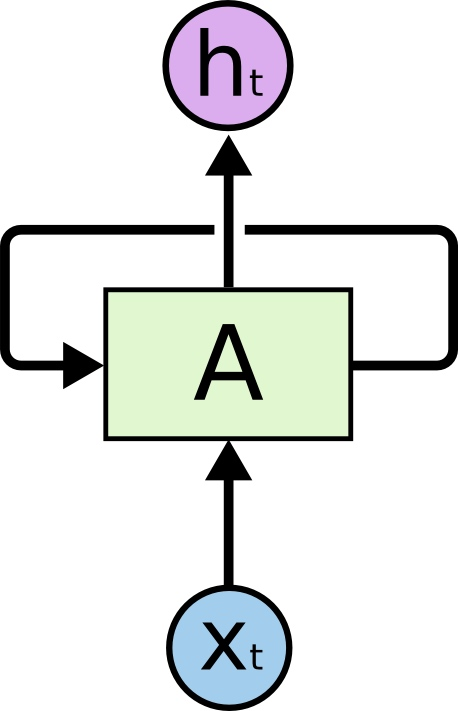

循环神经网络(RNN)
人们的每次思考并不都是从零开始的。比如说你在阅读这篇文章时，你基于对前面的文字的理解来理解你目前阅读到的文字，而不是每读到一个文字时，都抛弃掉前面的思考，从头开始。你的记忆是有持久性的。
传统的神经网络并不能如此，这似乎是一个主要的缺点。例如，假设你在看一场电影，你想对电影里的每一个场景进行分类。传统的神经网络不能够基于前面的已分类场景来推断接下来的场景分类。
循环神经网络(Recurrent Neural Networks)解决了这个问题。这种神经网络带有环，可以将信息持久化。
